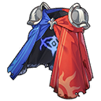
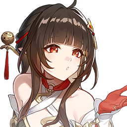
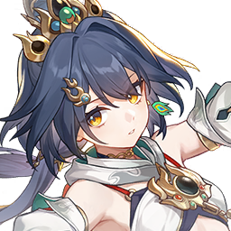
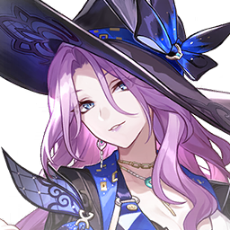
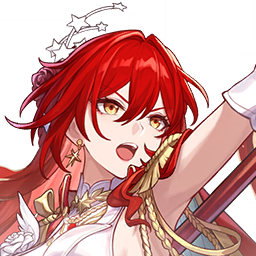

추천 광추
끝없는 산과 강을 거치더라도
공격력과 전우 추가 보호
효과 자세히
자신의 공격력으로 실드와 전우 지원을 함께 키운다.
언제나 여정이 평탄하기를
실드 보강과 팀 지원
효과 자세히
자주 실드를 갱신하는 운용과 맞는다.
여생의 첫날
방어력과 팀 모든 속성 피해 저항
효과 자세히
팀 생존 대안. 방어력은 단항의 실드 계수와 별개.
우주 시장 동향
피격 시 연소 적용
효과 자세히
아케론이 적 디버프를 활용하는 팀에서 선택.
추천 유물
별빛에 숨은 은둔자 4 · 바다에 잠긴 루샤카 2
- 머리
 주옵션HP부옵션목표 속도 · 공격력% · 공격력 · 효과 저항
주옵션HP부옵션목표 속도 · 공격력% · 공격력 · 효과 저항 - 손
 주옵션공격력부옵션목표 속도 · 공격력% · 효과 저항
주옵션공격력부옵션목표 속도 · 공격력% · 효과 저항 - 몸통
 주옵션공격력%부옵션목표 속도 · 공격력 · 효과 저항
주옵션공격력%부옵션목표 속도 · 공격력 · 효과 저항 - 다리
 주옵션속도 / 공격력%부옵션목표 속도 · 공격력% (주옵션 제외) · 공격력 · 효과 저항
주옵션속도 / 공격력%부옵션목표 속도 · 공격력% (주옵션 제외) · 공격력 · 효과 저항 - 구체
 주옵션공격력%부옵션목표 속도 · 공격력 · 효과 저항
주옵션공격력%부옵션목표 속도 · 공격력 · 효과 저항 - 매듭
 주옵션에너지 회복효율부옵션목표 속도 · 공격력% · 공격력 · 효과 저항
주옵션에너지 회복효율부옵션목표 속도 · 공격력% · 공격력 · 효과 저항
이 조합을 추천하는 이유
실드량 +22%, 자신의 실드가 걸린 아군 치피 +15%. 루샤카 딜러는 1번 슬롯.
태양과 번개의 여전사 4 · 천 개의 별이 모인 도시 2
- 머리
 주옵션HP부옵션목표 속도 · 공격력% · 공격력 · 효과 저항
주옵션HP부옵션목표 속도 · 공격력% · 공격력 · 효과 저항 - 손
 주옵션공격력부옵션목표 속도 · 공격력% · 효과 저항
주옵션공격력부옵션목표 속도 · 공격력% · 효과 저항 - 몸통

주옵션공격력%부옵션목표 속도 · 공격력 · 효과 저항 - 다리
 주옵션속도 / 공격력%부옵션목표 속도 · 공격력% (주옵션 제외) · 공격력 · 효과 저항
주옵션속도 / 공격력%부옵션목표 속도 · 공격력% (주옵션 제외) · 공격력 · 효과 저항 - 구체 주옵션공격력%부옵션목표 속도 · 공격력 · 효과 저항
- 매듭
 주옵션에너지 회복효율부옵션목표 속도 · 공격력% · 공격력 · 효과 저항
주옵션에너지 회복효율부옵션목표 속도 · 공격력% · 공격력 · 효과 저항
이 조합을 추천하는 이유
전광 필살기 치유로 여전사 4세트 발동. 장신구는 처치 후 팀 치피 +12%.
이 정도면 잘 키웠다
동일 파티·광추 기준 · 조건 [*]
| 스탯 | 추천 스탯 | 준종결 | 종결 |
|---|---|---|---|
| 공격력 [*] 실드와 전우 공격력의 기준. | 마을 3,000 | 마을 3,500 | 마을 4,000+ |
| 속도 [*] 134/160은 스킬 갱신과 SP 수급의 순서 분기. | 마을 134 | 마을 134 | 마을 160 선택 |
| HP [*] 생존용 가이드 하한. | 마을 3,000+ | 마을 3,000+ | 마을 3,000+ |
육성 단계의 기준
Lv.80·유물 +15 기준. 입문·중간 목표는 육성 편의를 위한 단계이며, 완성값의 버프와 편성 조건은 각주를 확인.
성혼과 추천 돌파
SP가 빠듯하면 1돌, 용령 행동과 실드에 더 투자하면 2돌.
1필살기 SP +1 · 전우 저항 관통 +18%추천
3턴.
2강화 용령 +2회 · 즉시 행동추천
용령 게이지 +100%. 강화 행동의 추가 피해와 실드가 각각 기존의 200%.
3필살기 +2 · 일반 공격 +1
해당 스킬과 대응 강화 스킬의 레벨을 올린다.
4전우 받는 피해 −20%
금석의 맹세, 이 몸을 배 삼아
5전투 스킬·특성 +2
해당 스킬과 대응 강화 스킬의 레벨을 올린다.
6적 받는 피해 +20% · 전우 방어력 무시 12%
필살기 시 전우 공격력 330%로 적 전체에 추가 피해.
추천 파티














기본 운영과 행적
기본 운영
딜러를 전우로 지정하고 실드가 필요할 때 스킬. 위험 구간 직전에 필살기를 사용해 용령 행동을 강화한다.
행적 육성 순서
스킬·필살기·특성 동급 → 일반 공격. 승급 4단계 행동·에너지, 6단계 실드 중첩 우선.
아하 속도 계산기 →기준과 출처 · 2026-11-25
4.7 게임 데이터 · Prydwen 개별 빌드